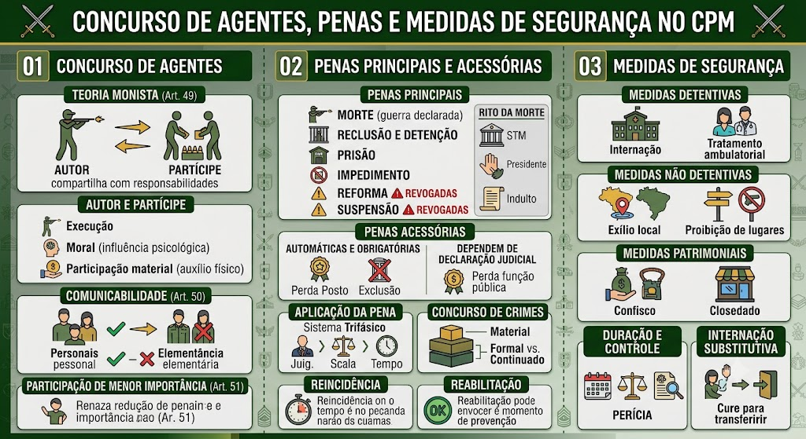

Material de estudo: Concurso de Agentes, Penas e Medidas de Segurança
Material complementar · Ver fonte no GitHub
Concurso de Agentes
Teoria Monista (Art. 49)
Todos que concorrem para o crime incidem nas mesmas penas, na medida de sua culpabilidade.
Autor: quem executa a conduta típica.
Partícipe: quem induz, instiga ou auxilia (moral ou materialmente).
Autor e Partícipe
Autor (Art. 49, caput): é quem executa a conduta típica, pratica o núcleo do tipo penal, ou que, embora não execute, tem o domínio do fato (teoria do domínio do fato).
Partícipe: é quem induz, instiga ou auxilia (moral ou materialmente) o autor, sem executar diretamente a conduta típica. A participação pode ser:
- Moral: induzimento ou instigação (influência psicológica).
- Material: auxílio físico, fornecimento de meios, etc.
A pena do partícipe é a mesma do autor, reduzida na medida de sua culpabilidade (Art. 49).
Comunicabilidade (Art. 50)
Circunstâncias pessoais (reincidência, emoção, parentesco) não se comunicam.
Elementares do crime comunicam‑se, se conhecidas pelo comparsa.
Participação de Menor Importância (Art. 51)
Se a participação for de somenos importância, a pena pode ser reduzida de 1/3 a 2/3.
Penas Principais e Acessórias
Penas Principais (Art. 55 do CPM, com alterações da Lei 14.688/2023)
Morte – apenas em tempo de guerra declarada, por fuzilamento.
Reclusão e Detenção – penas privativas de liberdade.
Prisão – até 2 anos, cumprida em recinto militar.
Impedimento – exclusiva para o crime de insubmissão.
⚠️ Revogações (Lei 14.688/2023): foram extintas as penas de Reforma e de Suspensão do exercício do posto/cargo.
📌 Rito e salvaguardas da pena de morte:
- Exige guerra declarada e procedimento especial previsto no CPPM.
- A sentença condenatória é comunicada imediatamente ao Presidente da República (art. 84, XXII, CF), para fins de exercício do poder de indulto ou comutação.
- O condenado tem direito à apelação obrigatória ao Superior Tribunal Militar (STM), nos termos do art. 122, II, da CF.
- A execução só ocorre após negado o pedido de clemência ou esgotado o prazo recursal especial, respeitando o devido processo legal.
Penas Acessórias – Efeitos da Condenação (Arts. 98 a 108)
Automáticas e obrigatórias:
- Perda de Posto e Patente (para oficiais condenados a pena superior a 2 anos – Art. 99);
- Exclusão das Forças Armadas (para praças na mesma condição – Art. 101);
- Indignidade para o oficialato (Art. 100 – não recepcionado pela CF/88).
Dependem de declaração judicial:
- Perda de função pública (Art. 102);
- Inabilitação para cargo público (Art. 104).
Efeitos extrapenais automáticos:
- Obrigação de reparar o dano (título executivo judicial);
- Confisco dos instrumentos e produtos do crime.
Aplicação da Pena – Sistema Trifásico (Art. 69)
1ª fase: fixação da pena‑base entre mínimo e máximo, considerando circunstâncias judiciais.
2ª fase: aplicação de atenuantes e agravantes (Arts. 70‑72).
3ª fase: incidência de causas de aumento ou diminuição (ex.: tentativa, minorante da confissão).
Agravantes Específicas do CPM (Art. 70)
- Embriaguez preordenada (II, “l”).
- Crime contra superior hierárquico em serviço (II, “f”).
- Crime com abuso de autoridade ou função (II, “g”).
Concurso de Crimes (Arts. 79‑80) e Limites de Cumprimento
Material (Art. 79): várias ações → vários crimes → cúmulo material (soma das penas).
Formal (Art. 79, §1º): uma ação → vários crimes → exasperação (pena mais grave + aumento de 1/6 a 1/2).
Crime continuado (Art. 80): crimes da mesma espécie, condições semelhantes – aplica‑se a pena de um só, aumentada de 1/6 a 1/2.
⚠️ Limites máximos de cumprimento (Art. 79, §2º do CPM):
- Reclusão: 30 anos.
- Detenção: 20 anos.
📌 Nuances práticas:
- Em concurso entre reclusão e detenção, cumpre‑se primeiro a reclusão, depois a detenção, respeitados os tetos de cada modalidade.
- Para fins de progressão de regime e livramento condicional, observa‑se o total da pena unificada, nos moldes da LEP.
- O teto do CPM prevalece sobre o limite de 40 anos do CP comum, por força da especialidade (o CPM é lei especial).
- A jurisprudência do STM recomenda atenção à detração e à unificação em casos de condenações sucessivas, aplicando‑se o art. 84 do CPM para evitar bis in idem.
Reincidência (Arts. 71 e 78)
Militar: só gera reincidência se o crime anterior for militar ou contra a segurança nacional.
Prazo depurador: 5 anos entre a extinção da pena anterior e o novo crime – após esse prazo, não há reincidência.
Crime político não gera reincidência (Art. 71, §2º).
Reabilitação (Arts. 134‑135)
Requisitos: 2 anos após a extinção da pena, bom comportamento e reparação do dano.
Restaura o sigilo dos antecedentes e cancela efeitos extrapenais, mas não apaga a reincidência.
Revogável se o reabilitado for condenado por crime posterior.
Medidas de Segurança
Medidas Detentivas
Internação – manicômio judiciário (para inimputáveis com periculosidade).
Tratamento ambulatorial – sem internação (casos de menor gravidade).
Medidas Não Detentivas (Arts. 115‑117)
Exílio local – proibição de residir/permanecer na localidade do crime por, no mínimo, 1 ano.
Proibição de lugares – acesso vedado a locais que favoreçam a recidiva.
Interdição de licença (Art. 115) – cassação do direito de dirigir por, no mínimo, 1 ano.
Medidas Patrimoniais (Arts. 118‑119)
Confisco (Art. 119) – perda em favor da União dos instrumentos e produtos do crime, independentemente de condenação ou extinção da punibilidade.
Interdição de estabelecimento – proibição de exercer atividade no local por 15 dias a 6 meses.
Duração e Controle
Prazo mínimo: de 1 a 3 anos, fixado na sentença.
Prazo máximo: indeterminado no CPM, mas limitado a 30 anos pelo STF (em linha com o art. 75 do CP).
Perícia de cessação (Art. 112): primeira perícia após o prazo mínimo; se persistir a periculosidade, nova perícia anualmente.
Liberação condicional é reversível.
Internação Substitutiva (Art. 113)
Se o internado se cura, é transferido para o estabelecimento penal comum para cumprir o restante da pena (detração).
Ébrios e toxicômanos (§ 3º) sujeitam‑se à internação curativa nos mesmos moldes.
Mapa-mental
